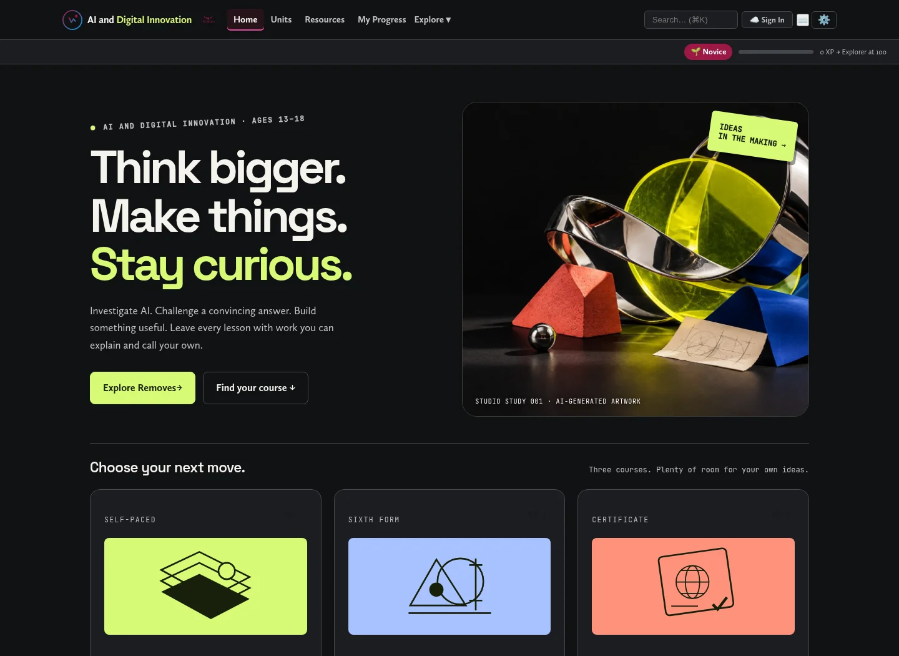
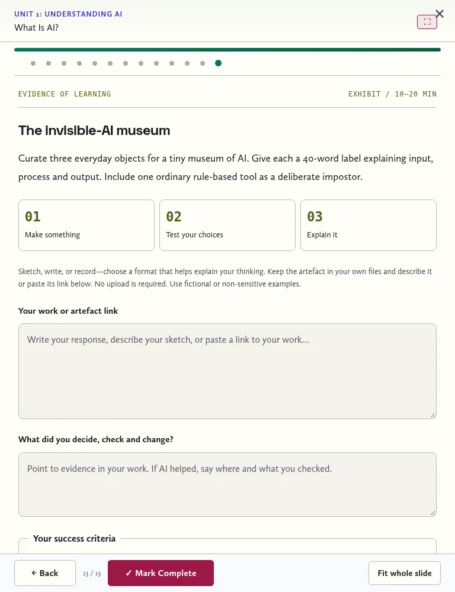

Course · Earlier review26 OCTOBER 2026 / CREATIVE STUDIO
Learning pupils can show.
A course they want to open.
The current design replaces the restrained editorial treatment with original sculptural artwork, bold type, lime, coral and blue course illustrations, and explanatory diagrams. It supports light and dark themes, narrow screens, high contrast and reduced motion. The generated hero illustration is 113 KB in WebP format.

Evidence in every lesson
136 distinct briefs: 40 Removes lessons, 37 revised lessons/project sessions and 59 AEP lessons. Each brief asks pupils to create an artefact, explain their decisions and revisions, check three criteria and answer an unaided transfer question. Formats include museum labels, case files, comics, prototypes, cost models, test packs and recorded defences. Writing, sketching and recording are alternatives; a paid AI account is not required.
Responses and self-checks save locally as pupils type. Pupils can download an individual text record, and Removes/Passport portfolios include their evidence. The revised work archive also includes revised evidence. Files or recordings remain in the pupil's chosen storage; the site records a description or link. The site does not upload those files, mark the work automatically or prove mastery.
The 20-lesson Passport
The Passport now selects exactly 20 Removes lessons from a single shared list. It uses the same teaching decks and evidence tasks. Completion has a new storage key; only identical Removes lesson IDs carry over from the previous Passport. Legacy progress, notes and certificates are preserved. New certificates say 20 lessons; old 24-lesson records retain their historical description.
The sequence: understand AI (4), learn with AI (5), create and decide (3), check what you see (2), people and consequences (3), test and redesign (3).
What was checked
All 136 evidence tasks rendered in Chromium. The Passport's 236 rendered slides, including interactive-lab injections, passed a full rendering sweep. Homepage and evidence layout checks covered 1440, 768 and 390 px. Saving, reloading, downloads, safe rendering of pupil-entered text, migration, portfolio isolation, cached offline access and the standalone Passport passed. A full-storage failure displayed a recovery message and still allowed download. Existing lab slide positions remained intact.
School-managed accounts, teacher assessment, third-party video availability and physical Safari/iPad devices still need a classroom pilot. The next useful step is to trial a case file and a practical prototype with pupils, then adjust workload and the success criteria from their work.
See the evidence interface

Removes: lesson-by-lesson evidence map
Unit 1: Understanding AI
Unit 2: AI for Study & Revision
Unit 3: Practical AI Skills
Unit 4: AI, Truth & Media
Unit 5: AI, Society & Ethics
Unit 6: Shaping AI — From User to Builder
Unit 7: AI, Wellbeing & Your Future
Design Magpie references
Shortlist: 0xnihilism's offset brutalist card (adapted with finer borders and restrained movement); 0x3ther's navigation controls (considered for compact interactions); Admin12121's expandable feature card (considered, but too product-pricing oriented for pupils). The current cards adapt the first. Uiverse MIT attribution is retained in THIRD_PARTY_NOTICES.txt. The page layout, explanatory diagrams and course motifs are original.